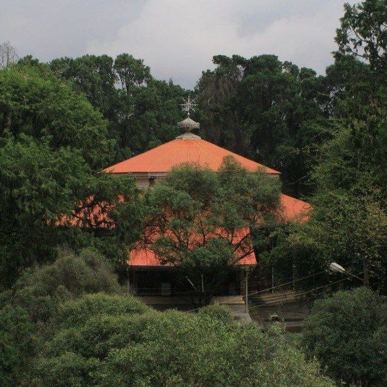

ETHIOPIAN ORTHODOX TEWAHEDO CHURCH

Kechene Debre Tiguhan Kidus Gabriel Church (ቀጨኔ ደብረ ትጉሀን ቅዱስ ገብርኤል ቤተ ክርስቲያን) is a historic Ethiopian Orthodox Tewahedo sanctuary tucked into the Kechene neighborhood of Gullele Sub-City in Addis Ababa. Built in the early twentieth century, the main church follows the traditional octagonal Ethiopian layout, featuring soft cream-colored walls accented by bright white trim and tall, arched wooden windows. Above the structure rises a dark, conical-tiered roof crowned with an ornate Ethiopian Orthodox cross and traditional ostrich-egg finials. A wraparound covered veranda supported by slender columns encircles the building, providing a shaded space where clergy and worshippers gather for liturgical chanting and prayer. Surrounding the sanctuary is a lush, serene compound filled with towering indigenous trees and mature greenery that shield the grounds from the busy city streets outside. Outside of major feast days and Sunday morning services, the atmosphere is remarkably quiet and contemplative, making it a favored retreat for personal reflection and scripture reading. Worshippers can often be seen sitting peacefully on the stone steps, leaning against the outer walls, or praying beneath the dense canopy of trees.
The church shares its sacred compound and parish administration with the neighboring Kechene Debre Selam Medhane Alem Church, creating a major spiritual and cultural landmark in northern Addis Ababa. Beyond the main sanctuary, the grounds house a Sunday school hall, a small museum (Bete Mezekir) preserving historical relics and manuscripts, and natural holy water (Tsebel) springs. Together, its classic architecture, natural beauty, and deep spiritual heritage make Kechene Kidus Gabriel one of the most treasured religious sites in the capital.
On the 19th day of every Ethiopian month, the quiet, tree-lined compound of Kechene Debre Tiguhan Kidus Gabriel Church transforms into a vibrant gathering of thousands of Ethiopian Orthodox Christians honoring the Archangel Gabriel. From the early hours before dawn, worshippers dressed in traditional white cotton shawls (netela and gabi) stream through the gates from across Addis Ababa, turning the peaceful sanctuary into a sea of white. The air fills with the resonant sounds of overnight chanting (Mahlet), rhythmic drumming (kebero), and the metallic shimmer of prayer staffs (meqwamiya) and sistra (tsenatsil) as priests and deacons lead the ancient liturgy.